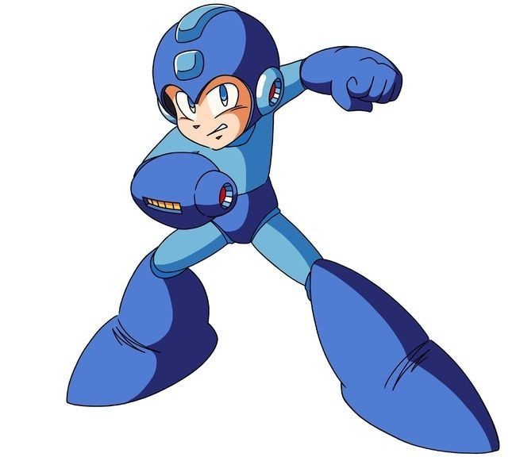

Bienvenido a la web del Estudio Fotografico Fotocol2000
esta es la pagina donde podras ver nuestros trabajos fotograficos 
Comando locales
- Subir cambios al repositorio (git commit -m 'Comentario del commmit')
- Comparar cambios entre archivos (git diff)
- Checar todo lo que hay pendiente (git status)
- Subir a stage todos los cambios (git add .)
- Deshacer un commit (git reset --soft HEAD~1)
- Obtiene el usuario configurado en git (git config user.name)
- Obtiene el email configurado en git (git config user.email)
- Sacar un archivo del stage (git restore --staged )
- Deshacer cambios de un archivo localmente (git restore )
- Obtiene el nombre del servidor remoto por default es origin (git remote)
- Obtiene la url del servidor remoto (git remote -v)
- Para pasar a stage y hacer commit en el mismo comando (git commit -am 'Mensaje del commit')
- Para ver cambios realizado (git log)
- Para ver ramas locales (git branch)
- Crear una rama local (git branch )
- Para ponerse en una rama en particular (git checkout )
- Para pasarse a una rama y crearla si no existe (git checkout -b )
- Fusiona a la rama principal la rama que se quiere (git merge )
- Compara dos ramas (git diff main )
- Despues de un merge entre ramas, para eliminar la rama que ya no se utiliza porque ya se elimino
se usa (git branch -d ) pero esta solo funciona si ya no hay nada que fusionar de la rama a eliminar
si hay algo en la rama que se quiere eliminar este comando marca error para proteger estos cambios y poder fusionarlos
pero si hay cambios que no se requieren o ya no sirve la rama y se quiere eliminar entonces se cambia la -d por -D y
esta rama a eliminar sera eliminada y se perdera
- Para limpiar el repositorio [recolector de basura] (git gc)
- Deshacer el ultimo commit (git commit --amend), no hacer salvo en casos muy especificos,
cusa conflictos si se quiere hacer despues de un push o cuando ya alguien tiene tus cambios
- En los comentarios de un commit se puede hacer referencia a un issue y este se reflejara en la pagina de github (git commit -m 'Commit Message #1 (es una referencia a un issue numero 1)')
- Se puede cerrar un issue desde un commit (git commit -m 'Closes #1') el Closes debe de estar en ingles en alguna parte del parrafo del mensaje del commit
- Para revertir git add (git reset HEAD .)
- Para ejecutar git add por pasos (git add -p ) esto tiene diferentes opciones [y(si),n (no), q(salir)]
Comando remotos
- Clonar un repositorio (git clone )
- Para subir el repositorio local al repositorio remoto (git push origin main)
- Para bajar los cambios del remoto al local (git pull origin main)
-
Se puede subir una rama de local a remoto (git push origin ), puedo solicitar un pull request para que fusionen en la nube la rama que subi
con la rama main y mientras lo hacen yo puedo seguir subiendo commits a mi rama remota, cuando hagan el merge en la nube debo de bajar los cambios de la rama
main que se fusiono a mi main local y ya puedo eliminar la rama local porque ya no serviria de nada ya que ya esta funcionando fusionada con la rama main